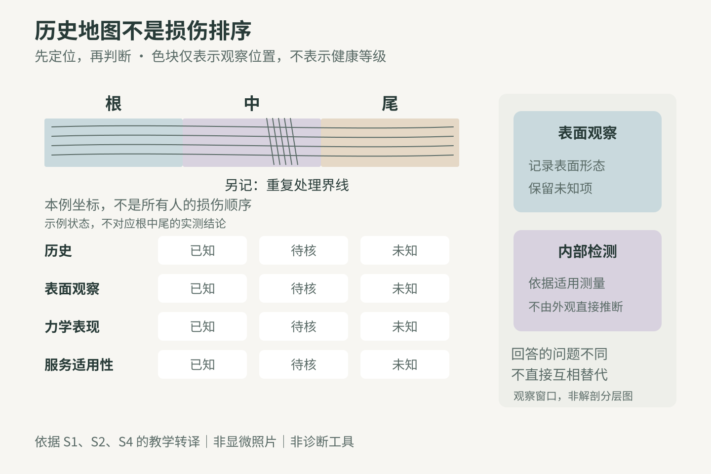
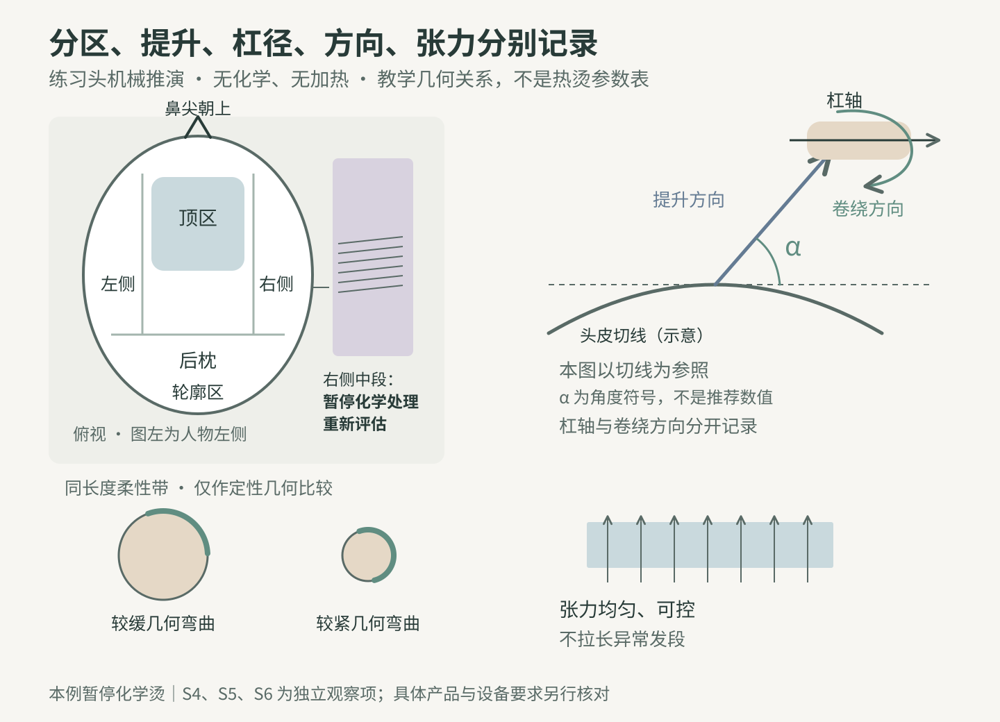
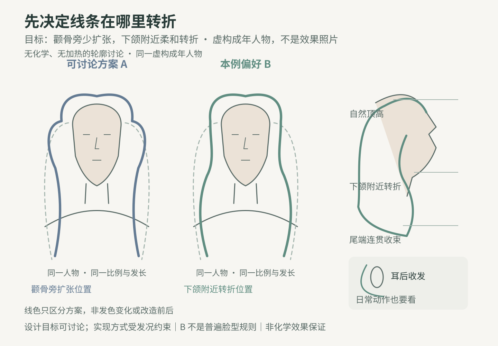

2026-10-12
热烫理论｜把判断对象缩小到具体发段
今天最重要的改变，是把“这头发已经软化到位”改写为：“我在什么位置、什么干湿状态下，观察到了什么；这个判断能覆盖哪些待处理发段？”这里的根段指头皮外侧靠近头皮的发干，不是毛囊。
一根长发可能跨过新生发、旧染发、旧漂发和重复重叠处理的界线；全头不同区域也可能有不同经历。根中尾是记录坐标，不是预先分好的健康等级。不能看到“发尾”就自动判成最差，也不能看到“新生发”就跳过检查。若中段有明显重复处理带，该带应单列，不要被“三段平均值”盖住。【教学推论，依据S1、S4】
门店所说的软化，是特定产品与流程中的操作判断；一次触感、拉伸感或弯曲表现，并不直接量出内部蛋白状态、全部可参与反应的化学键或之后的耐受性。把孔隙相关观察、力学表现、化学历史和实际成形表现揉成一个百分数，会丢掉互相矛盾的信息。S4把弹性、孔隙度、预先试烫和过程中卷曲检查分列，本课据此要求分别记录。
先问“能不能承受这项服务”，再问“怎样形成想要的线条”。想要更清晰的卷，不足以成为延长整体处理、提高热负荷或加大张力的理由。本课不提供通用浓度、温度、停留时间及所谓安全伸长比例；实际化学服务须依据选定产品的适用范围、说明书、测试和现场禁忌判断。没有可靠依据的发段，保留为未知，不能把未知当作合格。
现场记录用四栏即可：位置与历史；干态可见表现；按产品/专业规范进行的适用性检查结果；本次计划与停止条件。颜色深浅、是否顺滑都只能作为线索。出现明显断裂、异常失去回弹等情况时，不继续反复拉扯以求得一个“准确数字”，应停止该测试并重新评估服务。
证据精读｜两个研究，分别纠正两种过度自信
精读一 S1，Yamauchi与Okazaki，2007年。作者用蛋白酶处理、称重和显微观察，研究化学处理历史的识别。在两名有烫或染历史的供发者样本中，远端与近端的酶解表现不同；三个未处理供发样本未在这个指标上显示同样的明显段间差异。图中n=3表示重复实验；真正的供发者为两名有化学处理史者与三名未处理者，不能把重复数当作新增人数。它支持“取样位置可能改变结果”，不证明所有人的发尾必然更差，也没有给出门店软化标准。【S1】
读这一研究时，请先回答：它测的是酶处理后的降解，还是你手上那撮头发的即时软化？答案是前者。教学上可借它改变采样习惯，不能把蛋白酶试验搬到客人头上，更不能根据结果为两类还原剂排出普遍的安全排名。
精读二 S2，Watanabe等，2024年。作者建立近红外偏振成像方法，观察化学及热处理后的发丝内部。成像能揭示内部变化，但研究采用同一供发者的头发；每条件四根头发的多个视野，也不等于大量独立客户。它是一项方法学验证，没有验证门店手感、手机拍照或某个拉伸比例能预测烫后断发。【S2】
精读时还要分清它的观察量：透射率、偏振相关指标和热处理后出现的黑斑并不是同一个“损伤百分数”。作者对部分偏振变化的成因仍保留解释空间。因此，以下是教学推论：表面看起来整齐，仍不足以单独判断内部状态；历史与适用性检查用于补充决策信息，也不能完整测出内部结构。反过来，某个手感不好不能直接命名为某种内部化学损伤。
补充证据 S3，Tomita等，2008年：在特定离体实验中，漂与烫交替处理的损伤指标更突出。原始材料来自单一供发者；组合组同时累积漂与烫两类处理，文中的处理轮次不能当作等量暴露下的门店风险排序，更不能换算成“最多可以漂烫几次”。本课只借此提醒把叠加经历问清楚。【S3】
证据边界：本课没有找到“一个门店软化测试足以代表整头”的可靠验证，也没有据此证明某一新测试能百分之百排除风险。下面的诊断卡、设计案例和图示是原创教学转译，不是研究中的真实客户或已验证处方。
教学案例｜一位想要松弛大弯的中长发客人
人物为虚构成年人“小岚”，无真实照片或客户资料。她的头发到锁骨下，细至中等直径、密度中等，日常侧分，希望颧骨旁不要突然蓬大，下颌附近出现柔和转折；希望保留长度，早上可投入约十分钟整理。这些是本案例设定，不是根据脸型推断她应该喜欢什么。
假设服务史：靠近头皮的约0—7厘米未做过化学处理；约7—22厘米曾染色；更远端曾做过提浅。厘米数只是图中定位，不能换算成统一损伤级别或生长月份。本案例另设以下观察记录：后枕发尾仅轻度缠结；右侧中段有反复重叠处理史，在湿态适用性检查中出现明显断裂，检查随即停止。检查的具体方法应依据选定系统，本课不设通用拉伸比例。这些观察均为虚构教学输入，并非真人实测。最需要警惕的部位因此可能在中段。
第一步，先画两张图。头部地图标左侧、右侧、顶区、后枕和轮廓边缘；发长地图标根中尾与历史分界。两张图相交，才能写出“右侧中段”的具体位置。单写“发尾受损”会漏掉这个案例的关键。
第二步，补问三件事：曾经做的服务具体是什么，在哪些发段反复接触；平时整理是否集中在同一位置；她更不能接受的是长度减少、卷度较松，还是整理负担增加。历史记不清时记为未知，不用一次手感替她补齐事实。
第三步，做选择。依本案例给定的异常表现，今天不执行整头化学烫。先说明风险，提供保留长度的非化学造型示范，或在她同意后调整需要移除的发段。不能承诺修剪最末端就能解决中段问题。未来是否烫发需重新评估，而不是默认护理若干次便恢复适用。
若另一位外观相似的客人没有这些异常，也不能直接套用今日方案。须重新确认每个计划处理区是否符合所选系统的要求。案例教的是决策路径，不是按外观选配方。
人物美感｜让转折出现的位置服务于她的目标
小岚要的是侧面和正面都可辨认的松弛线条：顶区保留自然高度，颧骨附近留出呼吸感，主要横向转折放在下颌附近，锁骨以下的尾端呈连贯收束。这个位置选择来自她的愿望与现有长度，不是“某种脸型只能配某种卷”的规则。
先在原创轮廓图上标三个位置：起伏从哪里开始、最宽处在哪里、发尾朝哪里走。只看一根发束有多卷，无法回答这三个问题。用同一人物轮廓画两案：A案把横向扩张放在颧骨外侧；B案把扩张下移到下颌附近。让客人指出更接近她目标的部分，而不是用“高级”“显老”替她判断。
本例优先B案，但受损位置约束实现路径。把卷做得更紧、更密并不必然更有型；当轮廓边缘不连贯、尾部薄散时，增加卷曲数量可能进一步偏离她想要的整洁感。这是设计判断，需要看成品，不能写成实验结论。
今天仅在练习头上，以无化学、无加热的分束、轻柔摆放和线条标记讨论整体走势；这只能展示轮廓目标，不能展示持久卷曲效果。保留长度时，接受尾端转折较轻；若她更重视清楚的尾线，则商量剪裁后再看轮廓。所有剪裁都要取得同意。发束试样只能帮助讨论局部纹理，不等于全头效果保证。
成品沟通应同时看自然垂落、转头和耳后收发三个状态。记录她实际能完成的整理动作，别把照片中的精细造型当作“洗完不用管”的承诺。
图示讲解｜三张原创示意图的读法
图一 原理图“历史地图不是损伤排序”：左侧画一根简化发丝，从靠近头皮端向发尾标出根、中、尾，再在中段额外圈出重叠处理带。下方并排放置“历史”“表面观察”“力学表现”“服务适用性”四行，不使用统一的绿黄红渐变给所有发尾判级。右侧用两格分别表示“表面观察”与“内部检测”，标注“回答的问题不同，不能直接互相代替”；这不是发丝解剖分层图。所有色块代表记录位置，不是实测损伤值。【教学示意，依据S1、S2、S4】
图二 技术图“位置、角度、杠径和张力分开看”：俯视简化头部，标出顶区、两侧、后枕、轮廓区；用条纹标出本例右侧中段，并写“暂停化学处理，重新评估”。旁边画局部头皮切线、发片提升方向、杠轴与卷绕方向，给提升角一个符号α，不给所谓万能角度。再画大、小两个圆柱：同样发长绕在较小半径上，会需要更紧的几何弯曲；这只是几何关系，不能直接推算最终卷径。张力箭头等长表示均匀，不表示需要用力拉长。图下注明“无化学、无加热的机械关系教学；本例不执行化学烫”。
图三 美感图“把宽度放在哪里”：同一位虚构人物的正面与侧面轮廓，用虚线画原始发长，用两条不同颜色的曲线比较颧骨旁扩张与下颌附近转折。选定方案标出自然顶高、下颌转折、尾端收束，另画一个日常耳后收发小轮廓。无需真实人像、名人相似脸或未经许可的作品照片。此图只表达设计目标，不是实际烫后照片。
读图练习：先只看图一，说出“尚缺哪条信息”；再看图二，指出哪一项是几何变量；最后看图三，说出哪一条来自人物需求。能区分这三类信息，才不会把美感愿望误写成化学操作理由。



排杠与技术取舍｜先隔开概念，再连接结果
本段只在练习头上做无化学、无加热的机械设计推演，不能据此预测持久卷曲，也不是给小岚的化学操作单。SATCC官方考试材料把分区、发片与杠的关系、均匀分布、适当张力和发尾平整分项考核；其指定的半离基座等条件是特定考试要求，不能复制成所有热烫的标准。【S5】
分区有两个用途：头部几何分区帮助组织轮廓和工作顺序；历史分区帮助识别不同经历的发段。它们未必重合。若同一发片里同时有未处理发与明显异常发段，不能因为被卷在同一根杠上，就获得同等的可处理资格。无法依照所选系统可靠保护需保留发段时，改变或暂停化学方案，不自行发明隔离、混配或加热补偿。
角度也要分开说。分区线方向决定组织方式；本图将提升角α定义为发片与所画局部头皮切线的夹角，其他教材或系统若用不同参照线，须先换算和说明；卷绕方向决定局部线条走向；杠在基座上的落点则涉及根部支撑。四者不能用一个“45度排杠”概括。画图时先把参照线画出来，再谈角度，避免不同技师说着相同数字却指不同动作。
杠径提供几何约束。较大与较小杠径，是比较弯曲尺度的候选工具，不是最终干发卷径的承诺。发片宽度、厚度与发长需适合工具及该系统方法；过度堆叠的发片或折返发尾，会让你观察的对象不再一致。不要把这些机械问题全部归因于“药水没软透”。
张力用于让发丝有序服贴，应可控且分布均匀。不能借增加张力把异常发段拉成漂亮弧线，也不能用勒紧固定件补救发片组织。发尾纸帮助整理位置，不是损伤修复或化学隔离的证明。
为了实现本例B案，可在练习头上比较两侧前缘向后带的局部走势与自然向下走势，观察下颌附近是否出现目标转折；顶区只比较基座落点造成的轮廓变化。一次只改一个机械变量，再看整体，不同时改杠径、提升与张力后声称找到了唯一原因。实际服务若条件允许，仍须另行完成产品要求的适用性测试与过程检查。【原创教学推演；参考S4—S6】
沟通与居家｜把未知说清楚，把可做的目标留下来
咨询示例：“你想保留长度，把弯度放在下颌附近。今天右侧中段的表现和其他位置不一样，我不能用后枕那一撮的结果替它下结论。我们先看这张图，确认你最想留下的是长度还是尾部线条，再选今天适合的方式。”
解释暂停：“今天的检查不足以支持整头化学烫，尤其是这段。继续追更强的卷度可能增加断裂或毛躁的风险。我建议先用非化学方式示范目标轮廓。以后是否适合烫，要重新检查，不能保证护理几次就一定能做。”这段话不以恐吓促销护理，也不承诺“修复所有断键”。
解释分区：“左右两侧可以有相似的外形目标，但过程安排要依据各自发况。局部试样只告诉我们那个位置、那个条件下的表现，不是全头保证。”
居家建议应与实际完成的服务一致。本例没有做化学烫，所以不虚构烫后禁洗倒计时。示范轻柔分束整理、遇到卡结先停下解开、减少同一脆弱位置的反复拉扯；用品和热工具使用以实际产品与设备说明为准，不追加通用高温操作。若之后进行了化学服务，另给该系统要求的清洁、护理和复查说明。
约定复查时看什么：容易卡结的位置是否改变、是否出现新的明显短断发、自然垂落的转折是否仍符合预期、早间整理是否做得来。可由客人自愿拍同角度记录，但课程不收集或公开真实人像。若有持续疼痛、灼热、破损等头皮问题，停止相关服务并建议寻求适当专业帮助，不在门店判断疾病。
先练习，再看参考答案
练习一 判断信息边界
某客人在服务前已按产品要求完成适用性检查；处理过程中，后枕中段的卷曲检查符合该产品要求，但右侧旧提浅段的本轮过程检查尚未完成。你是否可以写“全头已到位”？请写出还缺的信息，并给出不增加暴露的下一步原则。
练习二 找出偷换概念
同事说：“手感顺了，所以内部已经修复；发尾拉得长，所以一定还能烫。”请指出两个推理各缺少什么证据。
练习三 改写操作记录
原记录：“细软受损，软化七成，28号杠。”请改成可让另一位技师读懂的记录。你可以写“未知”，不可编造浓度、温度、时间或测试结果。
练习四 从人物需求倒推
小岚希望颧骨旁不要突出、下颌附近有柔和转折，且希望保留长度。你会先讨论全头卷得一样紧，还是讨论最宽处、转折点与尾端收束？说出理由，以及受损位置如何改变实现方式。
练习五 阅读研究
S1某图写n=3，能不能写“每组研究了三位顾客”？S2四根头发的120个视野能不能当作120位顾客？请先找到实验单位。
参考答案与解释
一，不能。仍缺右侧旧提浅段及其他应检查位置的当前过程信息。按选定系统的检查频率、处理时限和异常处理要求行动，不能为了补检查而延长药剂停留、延迟规定的去除步骤或增加热负荷。如发现异常或无法在规定流程内可靠判断，按该系统的停止或终止流程处理，再重新评估；不能用另一位置合格来抵消。
二，顺滑是表面感受，不能直接证明内部结构恢复；被拉长描述的是当前形变，不能单独证明恢复能力或再次化学服务的安全性。还需要位置、干湿状态、历史、合适测试及其局限。
三，示范：“位置与发段：未记录；处理史：未知，待询证；观察时的干湿状态：未知；‘细软、受损、七成’所依据的具体观察、检查方法及结果：未记录；‘28号杠’对应的实际直径、单位、工具和放置区域：待核；设计目标、选定系统、适用性与停止条件：待记录。必要信息确认前，不据这条记录制定化学操作参数。”本题没有提供小岚的案例条件，不能把她的处理史填入。
四，先讨论轮廓。这些位置关系对应她明确提出的需求；全头同紧度并不等于目标轮廓。已知异常发段使今天的化学路线暂停，目标可先通过非化学示范讨论。
五，不能。S1方法说明相关结果为重复实验，真实供发者数量另列；S2视野嵌套在少量发丝中，不能当成人数。重复测量能增加该样本的描述信息，不能自动增加人群代表性。
常见误区自查
“根好尾差是固定顺序”错误；“一个测试点代表全头”错误；“加大张力能补足软化”错误；“官方考试基座位置就是万能热烫处方”错误；“没有观察到差异等于没有损伤”错误。
课末自测：能否不用“好/坏”两字，写出一个具体位置、一项观察、一条未知和一个选择？若可以，本课已转化成可复查的职业判断。
低风险发束对照｜验证采样方法会不会漏掉位置差异
目的：比较“只记一个中点”与“按位置分别记”的信息保留程度。验证对象是记录与采样方式，不是烫发配方，不测断键率，不判可烫阈值。
材料：来源和根端方向已知的离体练习发束，或可明确标记位置的天然发练习头；用已有处理历史的材料即可，不为实验新增染、漂、还原、氧化或加热。备同一背景、相机、纸质位置标记和同一把梳子。若来源或历史不明，就如实记录未知，不用来比较某种药剂。
先定规则：一份对照记录只允许写中段观察；一份完整记录分别写近端、中段、远端和肉眼可见的历史分界。两份均用同一组原始观察，避免为了做第二轮而反复梳拉造成材料改变。原始观察包括同光线下外观、轻柔分开时是否卡结、是否可见折点或分叉；不做拉断试验，不设必须达到的伸长比例。本轮仅做干态观察，不另加湿态操作；干湿比较属于另一个问题，不混入本轮的位置覆盖演示。
操作：先给至少三束练习材料编码，固定根端并标记位置；在同一光线、背景和干态条件下拍整体与各位置照片。只进行一次轻柔整理，遇到阻力停止并记录位置，不强行梳通。由一人完成全部原始观察，再把中点信息摘成A卡，全位置信息写成B卡。请一位未看原发束的同事先读A卡提出判断，再读B卡指出需要修改或保留未知的地方。
控制变量：同一发束、同一组观察、同一干湿状态、同一操作者、同一光线和术语。改变的变量仅是记录覆盖的位置。A后B会产生学习效应，所以这是教学演示，不能宣称完成了无偏随机试验；若想比较观察者表现，应另做独立编码与顺序平衡设计。
记录指标：A卡遗漏了哪些明确观察位置；B卡新增信息是否改变计划；两卡有没有用“全头”作过度推断；哪些结论仍无法从外观得出。用“可见/未见/未知”记录，不伪造损伤百分数。记录模板：发束编号｜方向与已知历史｜根段观察｜中段观察｜尾段观察｜其他异常点｜A卡判断｜B卡修订｜仍未知。
预先规定解释：若B卡发现中点未覆盖的差异，说明这束材料上单点记录丢失信息；若未发现差异，只能说本方法本次未检出，不能证明内部无损或化学服务安全。三束也不代表全体顾客。完成后拍照存档并清洁工具，不将实验样本用于真人服务。
结论卡｜今天带走的一条关键认知
一个发段的“到位”，不是整头头发的通行证。先问采样位置能代表哪里，再做服务判断；先确认发段是否适用，再讨论它要承担怎样的线条。
当班可用的三句话：
1. 我看到的是哪个位置、什么状态下的什么现象？
2. 这项观察回答了什么，还不能回答什么？
3. 哪个未知或异常会改变今天的方案？
复习上一课：同样的软化表现仍可能出现不同卷度；今天进一步提醒，同一头发甚至未必具有“同样”的软化表现。不要把代表性不足的观察写成整头事实。
明天上手前的检索练习：不翻课文，画出“头部分区 × 发长位置”的空白记录卡，为一个虚构案例写三条已知和两条未知，再用一句话说明你会保留、修改或暂停哪项服务。若只能写“按经验判断”，回到证据边界与记录练习重做。
本课所有人物、图形、诊断卡与设计推演为原创教学内容。两项重点研究说明为什么应尊重差异与测量边界；它们不替代产品说明、实操资质或针对具体客人的专业适用性评估。